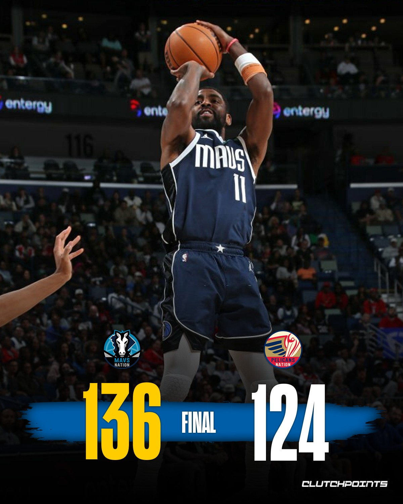
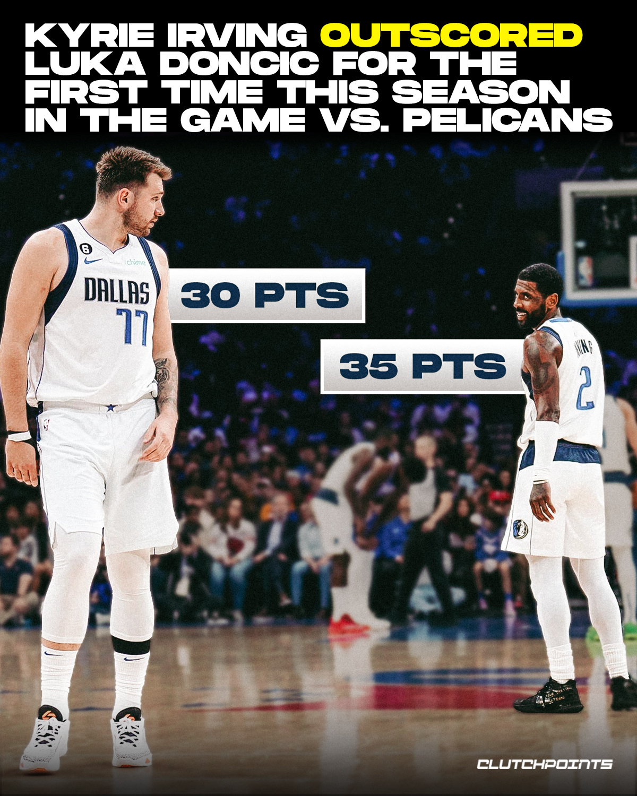
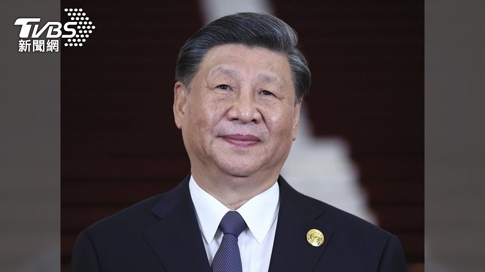
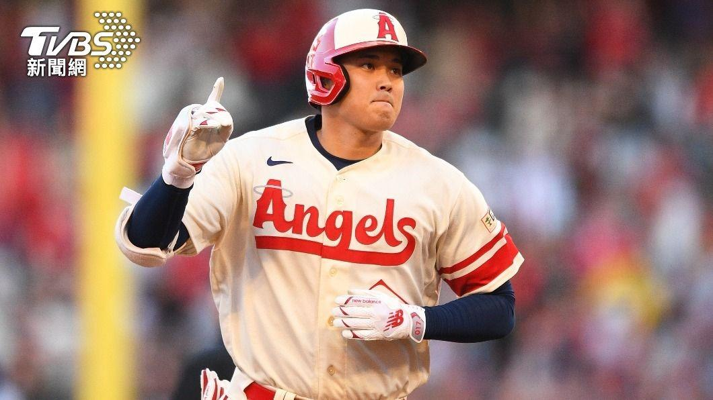
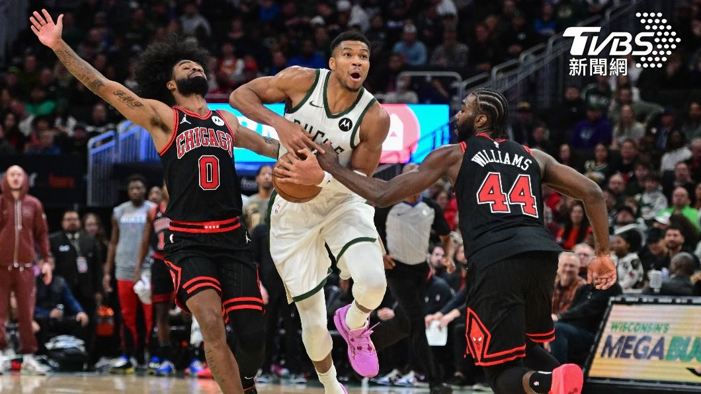
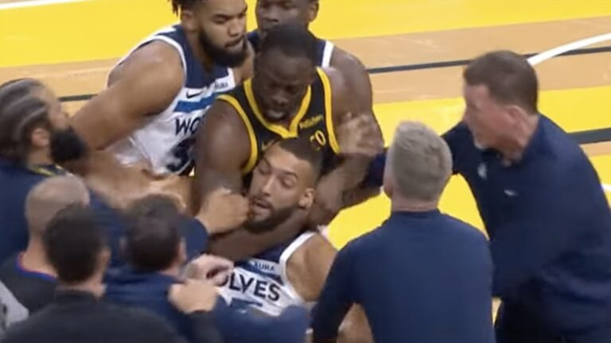

跳转到 2023/11/13 第1則
NBA／Luka、Kyrie聯手出擊得到65分幫助獨行俠終場136比124輕鬆在客場擊敗鵜鶘
跳转到 2023/11/14 第1則
習近平「拜習會」改唱軟調 知名媒體人：爭取喘息再抗美
跳转到 2023/11/14 第2則
MLB／大谷考慮簽高薪短約？美媒曝：變回二刀流後再簽長約
跳转到 2023/11/14 第3則
NBA／里拉德歸隊持續拉垮 字母哥飆35分率公鹿力退公牛
跳转到 2023/11/14 第4則
冰島2天震逾2800次！恐火山爆發「滅村」地裂驚人畫面曝
跳转到 2023/11/14 第5則
前一秒緊抱下一秒報警！2男路邊糾纏後你追我跑 原來是抓車手
跳转到 2023/11/16 第1則
勇士森林狼UFO综合格鬥團體赛 格林鎖喉遭驅逐出場
2023/11/13 第1則
Luka、Kyrie聯手出擊得到65分幫助獨行俠終場136比124輕鬆在客場擊敗鵜鶘


Kyrie Irving and Luka Doncic were UNSTOPPABLE in the Mavs’ blowout win over the Pelicans 🤩
Kyrie:
35 points
6 rebounds
7 assists
13-of-20 FG
7-of-10 3PT
Luka:
30 points
4 rebounds
9 assists
11-of-18 FG
4-of-9 3PT
2023/11/14 第1則
習近平「拜習會」改唱軟調 知名媒體人：爭取喘息再抗美

「拜習會」即將登場，中國對美態度近來大幅放軟。旅美政治學者鄧聿文認為，習近平期待「拜習會」的程度不低於拜登甚至更高
，是基於中國經濟形勢、改善中國國際處境及顯示自己掌控政局的能力，進而爭取強化實力再抗衡美國。
鄧聿文進一步表示，習近平此一考量的根本出發點是為中國爭取穩定和平的發展環境，5、6年即可，
藉此時間進一步做大中國經濟，
解決技術和產業升級問題。屆時美國若打壓中國，中國將會有更強的實力抗衡，「這一點是不能對外說的」。
美國之音（VOA）中文網今天發表鄧聿文題為「習近平為何對美國唱起軟調子」的文章，提到上述內容。
鄧聿文表示，從中國外交部日前宣布，習近平是應美國總統拜登（Joe Biden）邀請赴美參加中美元首會晤，
同時受邀出席APEC峰會，「拜習會」排在APEC峰會之前。這明顯是要營造「拜習會」不是兩國領導人的場邊會談，
而是一場習近平在美國本土與拜登的正式會談。他直指，這代表習近平看重的是「拜習會」，而非APEC峰會。
進而證明，習近平對於與拜登會談，即使不是比拜登更期待，也是和拜登同樣期待。
同時也說明，中國官方先前企圖對「拜習會」表現出的漫不經心是「裝出來的」。
鄧聿文提到，習近平不是不知道，沒有堅持讓李家超出席APEC峰會會讓中國國內很多人不滿，指責他有牌不打對美讓步。
但在習近平看來，對美的外交必須絕對掌控在自己手上，藉此表明自己對國內政局的掌控「堅如磐石，不管怎麼做都是對的」
2023/11/14 第2則
MLB／大谷考慮簽高薪短約？美媒曝：變回二刀流後再簽長約
美國職棒大聯盟（MLB）日籍球星大谷翔平成為自由球員後一舉一動都備受關注，外界也認為他有機會拿到總值5億美
元（約新台幣161.7億）的巨大合約，不過有體育記者持不同看法，他認為大谷翔平可能會接受金額更高的短約，並在重返投手
丘後尋求更大張的合約，而這也可能讓希望爭取大谷翔平加盟的球隊大大增加。

2023/11/14 第3則
NBA／里拉德歸隊持續拉垮 字母哥飆35分率公鹿力退公牛
美國職業籃球聯盟（NBA）密爾瓦基公鹿隊今天主場迎戰芝加哥公牛隊，里拉德雖歸隊，防守悍將克勞德卻進傷兵名單，
公鹿靠「字母哥」安特托昆博單場飆35分，以118比109贏球。
33歲前鋒克勞德（Jae Crowder）日前出戰奧蘭多魔術隊（Orlando Magic）後，左側大腿內收肌及腹部肌肉撕裂傷，將動手術，
預計缺席8週，而克勞德本季出賽9場，有7場從替補出發，平均上場時間超過26分鐘，陣中僅次於安特托昆博（Giannis Antetokounmpo）及里拉德（Damian Lillard），
重要性不言而喻。
公鹿（Milwaukee Bucks）開季戰績5勝4敗，又少了克勞德，再度考驗團隊防守戰力，
好消息是對戰公牛（Chicago Bulls）時，先前因小腿痠痛缺陣2場的里拉德重返賽場。
不過，在里拉德還在找手感情況下，公鹿得分重擔落在「字母哥」身上，團隊開賽火力全開，首節以35比18領先，而「字母哥」單節獨攬13分。
次節公牛打出一波9比0攻勢，隨後再靠德羅森（DeMar DeRozan）、拉文（Zach LaVine）火力、步步逼近，追成僅剩4分差，
公鹿由「字母哥」、畢斯利（Malik Beasley）輪流在禁區和外線發揮，半場結束仍握有10分領先優勢。
進入下半場後，公牛第3節一度趁公鹿進攻當機反超比分，但公鹿團隊多點開花，再度要回領先，決勝節拉文、佛契維奇（Nikola Vucevic）雖持續率公牛反攻，
依舊難敵手感火燙的「字母哥」，最終公鹿就以9分差拿下勝利。
「字母哥」過去2場比賽合計轟下89分，但公鹿都輸球，對公牛全場22投13中、斬獲35分，率隊中止2連敗，板凳出發的波蒂斯（Bobby Portis）獲19分次之，
至於剛復出的里拉德17次出手僅3中、拿下12分，似乎還在調整。
公牛佛契維奇、拉文各拿26分、20分，未能逆轉戰局。

2023/11/14 第4則
冰島2天震逾2800次！恐火山爆發「滅村」 地裂驚人畫面曝
冰島西南地區自10月底開始，頻繁出現火山活動，
本月12日冰島氣象局（The Icelandic Meteorological Office）更發布火山爆發警告，示警即將有相當大規模的火山噴發，
目前已強制撤離沿岸市鎮格林達維克（Grindavik）的4千名居民。此外，由於當地火山活動太過頻繁，當地已有不少地發出現相當嚴重的「地裂」，
當地居民也認為，一旦火山爆發真的會對當地造成「天崩地裂」，整個城鎮恐怕會被摧毀。
據英國《BBC》與澳洲雅虎新聞報導，冰島氣象局偵測到在這短短兩天內，已經有多達2800次的地震，而且在西南部的雷克雅內斯半島（Reykjanes peninsula），
從10月底開始就偵測到非常活躍的火山活動，截至目前為止已發生逾2萬次地震。
報導也指出，雷克雅內斯半島的火山群已經休眠800年，但在2021年時重新出現活動。
冰島氣象局也表示，在本月11日偵測到一條地下岩漿或熔岩河，向東北方向蔓延，穿越格林達維克，並向內延伸約10公里，深度不到800公尺。
因此冰島氣象局研判，在數小時內或接下來的幾天內，恐怕會發生火山爆發，而且是具相當規模的程度。
冰島氣象局也預測，火山爆發後，接下來的數週仍然會有活躍的火山爆發與活動。
目前冰島當局已撤離格林達維克4千居民，當地民眾奧古斯朵特（Ragga Ágústdóttir）就認為，這場火山爆發恐怕會造成「滅村」的結果。
另外目前當地的影像也可見，許多道路與地區都因為火山活躍活動，造成嚴重地裂的狀況，令人感到震撼，目前冰島當局持續嚴密監控火山活動。
2023/11/14 第5則
前一秒緊抱下一秒報警！2男路邊糾纏後你追我跑 原來是抓車手
大馬路邊，兩個大男人緊緊抱在一起，不斷扭來扭去，一旁牽車的民眾，路過的路人都覺得好奇，兩個大男人，到底是感情有多好，但是下一秒。
目擊民眾：「他們在幹嘛啊起，嗚。」
戴安全帽的黑衣男突然扭頭，甩開白衣男子後，一把將他推開，就在大街上拔腿狂奔。
目擊民眾：「就抱在一起以為是朋友在玩，後來他好像就掙脫啦，掙脫連安全帽都掉地上然後就趕快跑。」
目擊民眾都看傻眼了，到底是在演那齣，前一秒緊緊相擁，下一秒翻臉分手，不但安全帽掉在地上，就連機車也沒熄火還發動著，只好幫忙報警。
事發地點，就在台中市中清路，北平路口，晚間七點多，民眾目擊兩名男子抱在一起超過三分鐘，原本以為是喝醉酒在扶朋友，直到變成你追我跑，
又看到員警到場後，這才恍然大悟，原來是便衣員警逮捕詐騙車手，但對方假裝配合卻突然掙脫，拔腿狂奔，最後在200公尺外的天津路口，被支援警力逮捕。
目擊民眾：「跑了以後剛好後面又來一個便衣警察，就問他們人嘞我們就說往哪邊跑走這樣。」
西屯所所長張竣詒：「查獲作案用工作手機兩支及贓款新台幣13萬元。」
警方表示，日前偵辦詐前案件後，鎖定收贓款車手身份，在發現他的行蹤後，趁他下車購物時抓人，雖然第一時間被脫逃，
但支援警力及時趕到將人逮捕，也將循線追查集團成員，向上溯源。
2023/11/16 第1則
勇士森林狼UFO综合格鬥團體赛 格林鎖喉遭驅逐出場
美國職籃（NBA）金洲勇士隊（Golden State Warriors）15日在柯瑞（Stephen Curry）缺陣下對上明尼蘇達灰狼隊（Minnesota Timberwolves），
沒想到開賽僅2分鐘就爆發激烈衝突，雙方球員瞬間扭打成一團，最終勇士隊「K湯」湯普森（Klay Thompson）和「嘴綠」格林（Draymond Green）、
灰狼隊麥克丹尼爾斯（Jaden McDaniels）皆被驅逐出場。
這場衝突的起點是湯普森和麥克丹尼爾斯，當時灰狼隊外線未投進後，可以見到湯普森在卡位時抓住麥克丹尼爾斯的衣領，後者不服氣下也緊抓對方球衣，
2人就這樣一路糾纏至球場中央，湯普森這時也似乎被惹火、猛力地將麥克丹尼爾斯往旁邊甩，雖然裁判已衝上前架開2人，
但氣不過的麥克丹尼爾斯仍某猛力推了湯普森一把，接著甚至有出拳動作。
雙方球員隨即上前想拉開隊友，而灰狼隊中鋒戈貝爾（Rudy Gobert）
直接站到當事人中間勸架，沒想到勇士隊格林突然衝向戈貝特並做出「鎖喉」動作，
且一路將他往後拉，所幸灰狼隊人員趕緊上前使格林鬆手，整場衝突才告一段落，
畫面還帶到回到板凳區的湯普森，可以見盪他的球衣甚至在衝突中被撕開。
裁判在衝突當下便賞給湯普森和麥克丹尼爾斯各1個技術犯規，後續查看事發經過的影片後更直接將2人驅逐出場，
至於做出危險動作的格林則被判2級惡意犯規、同樣驅逐出場。
而最終勇士悍將格林(Draymond Green)因為對灰狼巨塔戈貝爾(Rudy Gobert)使出「鎖喉功」，遭NBA禁賽5場，
聯盟解釋禁賽長度是考量到格林歷來「缺乏運動精神」的行為，他將因此損失76萬9704美元(約2464萬台幣)；
記者赫林(Kurt Helin)直言，老化的勇士恐難再容忍格林這種傷害球隊的行為。
